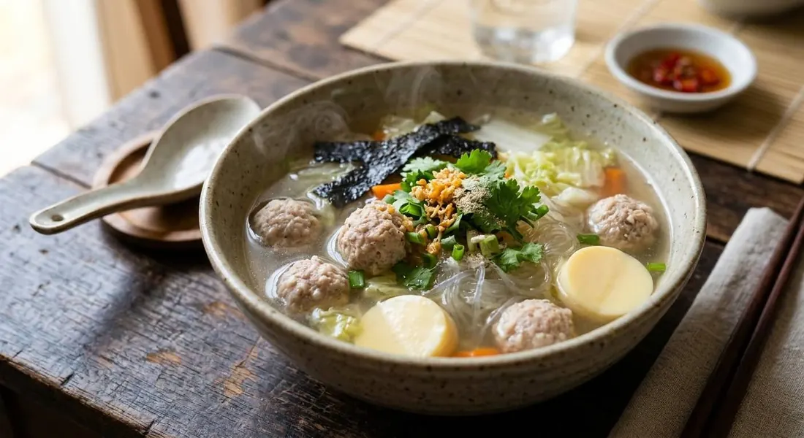

The one mild dish on the Thai table — a clear broth with seasoned pork balls, glass noodles, tofu and toasted seaweed. The counterweight to the heat.

แกงจืด means "bland curry" — and the name is a joke the whole table is in on. In a cuisine built on heat, this is the dish that carries no chilli at all: a clear, quiet broth with pork balls, soft vegetables, glass noodles and tofu. It sits in the middle of a Thai family meal like a full stop, the spoon everyone reaches for between the curries and the yam salads. Children start with it; the adults finish with it.
Its calm is built, not empty. The broth starts with coriander roots simmered with salt — the same aromatic foundation as the loudest soups, used here at a whisper. The pork balls are kneaded with cornflour, oyster sauce and seasoning, dropped into the simmer and skimmed so the broth stays clear. And the seaweed — the source's quiet trick — is toasted over a flame first, which turns it from an afterthought into the smell of the whole pot.
The classic version is the glass-noodle one: garlic fried golden first, then pork and soaked dried shrimp, then the broth, then noodles and egg tofu at the end. Two versions, same law — nothing red, nothing loud, everything clean.
| Thai | English | Amount |
|---|---|---|
| The broth and balls | ||
| รากผักชี · ผักชี | Coriander roots and leaves | 1 stem |
| เกลือป่น | Salt | a little |
| หมูบด | Minced pork | 500 g |
| แป้งข้าวโพด | Cornflour | 1 tbsp |
| น้ำมันหอย | Oyster sauce | 3 tbsp |
| ซอสปรุงรส | Seasoning sauce | 1 tbsp |
| ผงปรุงรสหมู | Pork seasoning powder | 1 tsp |
| แครอท | Carrot | ½ |
| สาหร่าย (ย่างไฟให้หอม) | Dried seaweed, toasted | as liked |
| กะหล่ำปลี | Cabbage, cut | 1 small |
| The classic glass-noodle version (แกงจืดวุ้นเส้นโบราณ) | ||
| กระเทียมสับ (เจียว) | Garlic, fried golden | as liked |
| กุ้งแห้ง (แช่น้ำจนนิ่ม) | Dried shrimp, soaked | as liked |
| วุ้นเส้น | Glass noodles, soaked | as liked |
| เต้าหู้ไข่ | Egg tofu | as liked |
| ขึ้นฉ่าย | Celery | as liked |
Seaweed vs glass noodles. Two classics: the seaweed-and-pork-ball soup (Wongnai) and the old-style glass-noodle soup with fried garlic and dried shrimp (Kapook). Same broth logic, different body. Both published, both mild.
Fried garlic start. The noodle version fries garlic golden before anything else — the soup's only browned note. The seaweed version skips it for a purely clear broth.
Egg tofu. In the classic noodle version; absent from the seaweed one. The soft tofu is what children fish out of the pot first.
Dried shrimp. The noodle version's umami anchor; the seaweed version leans on the seasoning sauces instead.
What makes it "jued". No chilli, no curry paste, no sour. On this, every source agrees — the blandness is the point.
This recipe is translated from the following Thai-language sources. Where they disagree, we've said so.
1. Wongnai (Nickktwf) — "แกงจืดสาหร่ายหมูสับ หอมๆ น้ำซุปรสกลมกล่อม" (the seaweed and pork-ball version, full quantities, the toasting trick) — wongnai.com
2. Kapook (Ananya Amy_1994) — "ต้มจืดวุ้นเส้น เมนูอร่อยทำง่าย" (the classic glass-noodle version with fried garlic and dried shrimp) — cooking.kapook.com